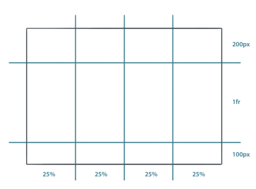
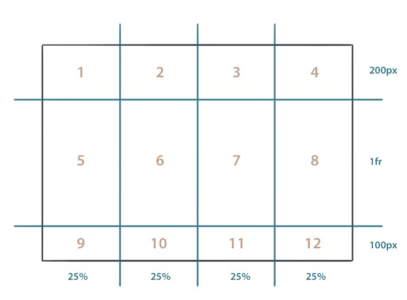
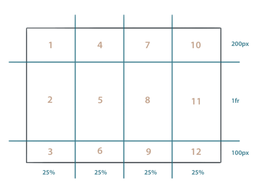

Einführung in Gestaltungsraster
mit dem Grid Layout Module
Mit CSS Grid erzeugt ihr Gestaltungsraster, indem Zeilen und Spalten für einen Bereich definiert werden.
Elemente werden dann den Rasterzellen zugewiesen, wodurch sehr interessante Layouts möglich sind.
Komplexe Weblayouts lassen sich weder mit float-basierten Gestaltungsrastern noch mit Flexbox perfekt
umsetzen.
CSS Grid ermöglicht »echte« Gestaltungsraster auf Basis von CSS.
Grundlegende Funktionsweise von CSS Grid
CSS Grids arbeiten mit einem Elternelement, in dem das Raster definiert wird und mit darin
enthaltenen
Kind-Elementen, die im Raster positioniert werden. Dem Elternelement wird mit Hilfe der
Angabedisplay:grid; mitgeteilt, dass CSS Grids genutzt werden sollen. Mit Hilfe der
Eigenschaften
grid-template-columns und grid-template-rows werden Rasterlinien gezeichnet.
Das folgende Beispiel erzeugt ein CSS Grid mit drei Zeilen und vier Spalten. Die erste Zeile ist
200 Pixel hoch, die letzte 100 Pixel. Die mittlere Zeile hat die Angabe 1fr (1 Fraction)
erhalten. Damit erstreckt Sie sich über den noch freien Platz. Wie viel Platz zur Verfügung steht wird
durch die Gesamthöhe des .container bestimmt. Beachtet, dass die Angabe 1fr auch 0 Pixel bedeuten kann,
wenn der Container eine zu niedrige bzw. keine Höhe erhalten hat. Die vier Spalten sind jeweils 25%
breit.
.container {
display: grid;
grid-template-rows:200px 1fr 100px;
grid-template-columns:25% 25% 25% 25%;
}

Wenn innerhalb des Elternelements nun Kind-Elemente liegen, fügen sich die Inhalte automatisch
oben links oben nach rechts unten in die Rasterzellen ein.
<div class="container"><div>Element 1</div><div>Element 2</div>
…
<div>Element 11</div><div>Element 12</div></div>

Standardmäßig ordnen sich die Elemente zeilenbasiert an: Die Zahlen zeigen in welcher Reihenfolge
die Kind-Elemente im Grid positioniert werden. Mit der CSS-Eigenschaft grid-auto-flow kann
beeinflusst werden, nach welcher Regel die Kind-Elemente im Raster einsortiert werden. Der Wert
column führt beispielsweise zu folgender Anordnung:
.container {
display: grid;
grid-template-rows: 200px 1fr 100px;
grid-template-columns: 25% 25% 25% 25%;
grid-auto-flow: column;
}

Die Zahlen zeigen an, in welcher Reihenfolge die Kind-Elemente im Grid positioniert werden.